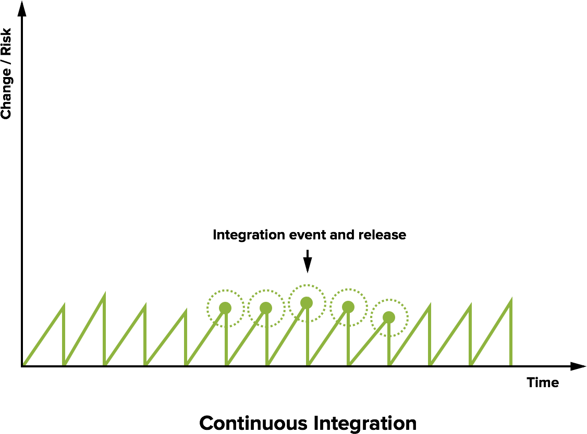
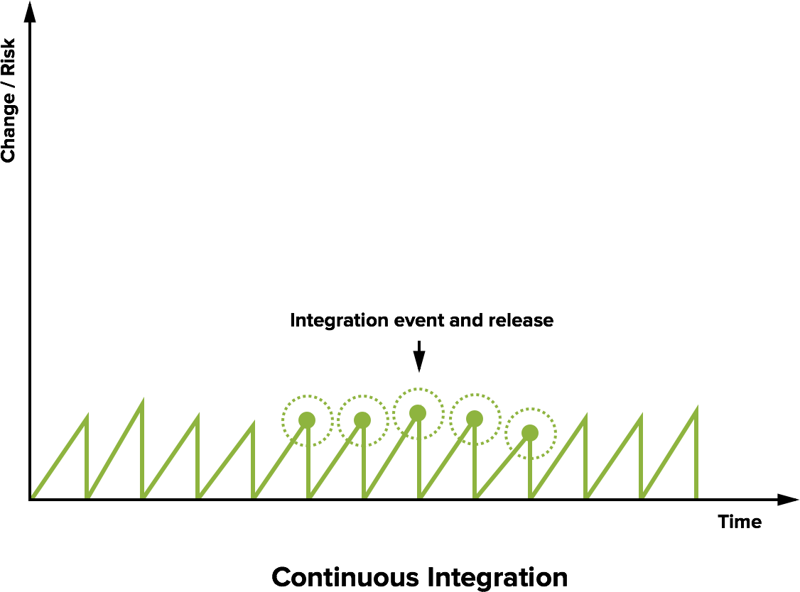

Continuous Integration
Software Engineering
(for Intelligent Distributed Systems)
Module “Principles and Methods”
A.Y. 2023/2024
Giovanni Ciatto (reusing material made by Danilo Pianini)
Compiled on: 2025-02-10 — printable version
Continuous Integration
The practice of integrating code with a main development line continuously
Verifying that the build remains intact
- Requires build automation to be in place
- Requires testing to be in place
- Pivot point of the DevOps practices
- Historically introduced by the extreme programming (XP) community
- Now widespread in the larger DevOps community
The Integration Hell
- Traditional software development takes several months for “integrating” a couple of years of development
- The longer there is no integrated project, the higher the risk
 $\Rightarrow$

$\Rightarrow$

Microreleases and protoduction
- High frequency integration may lead to high frequency releases
- Possibly, one per commit
- Of course, versioning must be appropriate…
Traditionally, protoduction is jargon for a prototype that ends up in production

|
|
Intensive operations should be elsewhere
- The build process should be rich and fast
- Operations requiring a long time should be automated
- And run somewhere else than devs’ PCs

Continuous integration concept

Continuous integration software
Software that promotes CI practices should:
- Provide clean environments for compilation/testing
- Provide a wide range of environments
- Matching the relevant specifications of the actual targets
- High degree of configurability
- Possibly, declarative configuration
- A notification system to alert about failures or issues
- Support for authentication and deployment to external services
Continuous integration software
Plenty of technologies on the market
- Circle CI
- Travis CI
- Werker
- done.io
- Codefresh
- Codeship
- Bitbucket Pipelines
- GitHub Actions
- GitLab CI/CD Pipelines
- JetBrains TeamCity
We will use GitHub Actions: GitHub integration, free for FOSS, multi-os OSs supported
Core concepts
Naming and organization is variable across platforms, but in general:
- One or more pipelines can be associated to events
- For instance, a new commit, an update to a pull request, or a timeout
- Every pipeline is composed of a sequence of operations
- Every operation could be composed of sequential or parallel sub-operations
- How many hierarchical levels are available depends on the specific platform
- GitHub Actions: workflow $\Rightarrow$ job $\Rightarrow$ step
- Travis CI: build $\Rightarrow$ stage $\Rightarrow$ job $\Rightarrow$ phase
- Execution happens in a fresh system (virtual machine or container)
- Often containers inside virtual machines
- The specific point of the hierarchy at which the VM/container is spawned depends on the CI platform
Pipeline design
In essence, designing a CI system is designing a software construction, verification, and delivery pipeline with the abstractions provided by the selected provider.
- Think of all the operations required starting from one or more blank VMs
- OS configuration
- Software installation
- Project checkout
- Compilation
- Testing
- Secrets configuration
- Delivery
- …
- Organize them in a dependency graph
- Model the graph with the provided CI tooling
Configuration can grow complex, and is usually stored in a YAML file
(but there are exceptions, JetBrains TeamCity uses a Kotlin DSL).
Pipeline design (abstract example)

- Rectangles represent operations
GitHub Actions: Structure
- Workflows react to events, launching jobs
- Multiple workflows run in parallel, unless explicitly restricted
- Jobs of the same workflow run a sequence of steps
- Multiple jobs run in parallel, unless a dependency among them is explicitly declared
- Concurrency limits can be imposed across workflows
- They can communicate via outputs
- Steps of the same job run sequentially
- They can communicate via outputs
GitHub Actions (practical example)
- Small rectangles represent steps
- Azure boxes represent jobs
- The whole is a workflow
GitHub Actions: Configuration
-
Workflows are configured in YAML files located in the default branch of the repository
- in the
.github/workflows/folder.
- in the
-
One configuration file $\Rightarrow$ one workflow
-
For security reasons, workflows may need to get manually activated in the Actions tab of the GitHub web interface.
GitHub Actions: Runners
- Executors of GitHub actions are called runners
- virtual machines (hosted by GitHub)
- with the GitHub Actions runner application installed.
- virtual machines (hosted by GitHub)
Note: the GitHub Actions application is open source and can be installed locally, creating “self-hosted runners”. Self-hosted and GitHub-hosted runners can work together.
-
Upon their creation, runners have a default environment
- which depends on their operating system
-
Documentation available at https://docs.github.com/en/actions/using-github-hosted-runners/about-github-hosted-runners#preinstalled-software
Convention over configuration
Several CI systems inherit the “convention over configuration” principle.
GitHub actions does not adhere to the principle: if left unconfigured, the runner does nothing (it does not even clone the repository locally).
- Probable reason: Actions is an all-round repository automation system for GitHub,
- not just a “plain” CI/CD pipeline
- $\Rightarrow$ it can react to many different events, not just changes to the git repository history
GHA: basic workflow structure
Minimal, simplified workflow structure:
# Mandatory workflow name
name: Workflow Name
on: # Events that trigger the workflow
jobs: # Jobs composing the workflow, each one will run on a different runner
Job-Name: # Every job must be named
# The type of runner executing the job, usually the OS
runs-on: runner-name
steps: # A list of commands, or "actions"
- # first step
- # second step
Another-Job: # This one runs in parallel with Job-Name
runs-on: '...'
steps: [ ... ]
Workflow minimal example
Consider check.yml file on the calculator repository:
name: CI/CD
on:
push:
paths-ignore:
- '.gitignore'
- 'CHANGELOG.md'
- 'LICENSE'
- 'README.md'
pull_request:
workflow_dispatch:
jobs:
test:
strategy:
fail-fast: false
matrix:
os:
- ubuntu-latest
- windows-latest
- macos-latest
python-version:
- '3.10'
- '3.11'
- '3.12'
runs-on: ${{ matrix.os }}
name: Test on Python ${{ matrix.python-version }}, on ${{ matrix.os }}
timeout-minutes: 45
steps:
- name: Setup Python
uses: actions/setup-python@v5
with:
python-version: ${{ matrix.python-version }}
- name: Install poetry
run: pip install poetry
- name: Checkout code
uses: actions/checkout@v4
- name: Restore Python dependencies
run: poetry install
- name: Test
shell: bash
run: poetry run python -m unittest discover -v -s tests
release:
needs: test
if: github.ref == 'refs/heads/master'
runs-on: ubuntu-latest
name: Release on PyPI and GitHub
permissions:
contents: write
steps:
- name: Checkout code
uses: actions/checkout@v4
with:
fetch-depth: 0
token: ${{ secrets.GITHUB_TOKEN }}
- name: Install poetry
run: pip install poetry
- name: Restore Python dependencies
run: poetry install
- name: Bump version
shell: bash
run: poetry run python bump_version.py --apply | tee CHANGELOG.md
- name: Commit version change
shell: bash
run: |
git config user.name "${{ github.actor }}"
git config user.email "${{ github.actor }}@users.noreply.github.com"
git add pyproject.toml
git commit -m "chore(release): v.$(poetry version --short) [skip ci]"
- name: Build Python Package
run: poetry build
- name: Push changes
run: git push
- name: Publish on TestPyPI
run: poetry publish --repository pypi-test --username __token__ --password ${{ secrets.TEST_PYPI_TOKEN }}
- name: Create GitHub Release
shell: bash
run: |
RELEASE_TAG=$(poetry version --short)
gh release create $RELEASE_TAG dist/* -t v$RELEASE_TAG -F CHANGELOG.md
env:
GITHUB_TOKEN: ${{ secrets.GITHUB_TOKEN }}
Checking out the repository
By default, GitHub actions’ runners do not check out the repository
- Actions may not need to access the code
- e.g., Actions automating issues, projects
It is a common and non-trivial operation (the checked out version must be the version originating the workflow), thus GitHub provides an action:
Since actions typically do not need the entire history of the project, by default the action checks out only the commit that originated the workflow (--depth=1 when cloning)
- Shallow cloning has better performance
- $\Rightarrow$ It may break operations that rely on the entire history!
- e.g., the git-sensitive semantic versioning system
Also, tags don’t get checked out
Writing outputs
Communication with the runner happens via workflow commands
The simplest way to create outputs for actions is to print on standard output a message in the form:
"{name}={value}"
and redirect it to the end of the file stored in the $GITHUB_OUTPUT environment variable:
echo "{name}={value}" >> $GITHUB_OUTPUT
Build matrix
Most software products are meant to be portable
- Across operating systems
- Across different frameworks and languages
- Across runtime configuration
A good continuous integration pipeline should test all the supported combinations*
- or a sample, if the performance is otherwise unbearable
The solution is the adoption of a build matrix
- Build variables and their allowed values are specified
- The CI integrator generates the cartesian product of the variable values, and launches a build for each!
- Note: there is no built-in feature to exclude some combination
- It must be done manually using
ifconditionals
- It must be done manually using
Build matrix in GHA
Private data and continuous integration
We would like the CI to be able to
- Sign our artifacts
- Delivery/Deploy our artifacts on remote targets
Both operations require private information to be shared
Of course, private data can’t be shared
- Attackers may steal the identity
- Attackers may compromise deployments
- In case of open projects, attackers may exploit pull requests!
- Fork your project (which has e.g. a secret environment variable)
- Print the value of the secret (e.g. with
printenv)
How to share a secret with the build environment?
Secrets
Secrets can be stored in GitHub at the repository or organization level.
GitHub Actions can access these secrets from the context:
- Using the
secrets.<secret name>context object - Access is allowed only for workflows generated by local events
- Namely, no secrets for pull requests
Secrets can be added from the web interface (for mice lovers), or via the GitHub API.
#!/usr/bin/env ruby
require 'rubygems'
require 'bundler/setup'
require 'octokit'
require 'rbnacl'
repo_slug, name, value = ARGV
client = Octokit::Client.new(:access_token => 'access_token_from_github')
pubkey = client.get_public_key(repo_slug)
key = Base64.decode64(pubkey.key)
sodium_box = RbNaCl::Boxes::Sealed.from_public_key(key)
encrypted_value = Base64.strict_encode64(sodium_box.encrypt(value))
payload = { 'key_id' => pubkey.key_id, 'encrypted_value' => encrypted_value }
client.create_or_update_secret(repo_slug, name, payload)
Stale builds
- Stuff works
- Nobody touches it for months
- Untouched stuff is now borked!
- Connected to the issue of build reproducibility
- The higher the build reproducibility, the higher its robustness
- The default runner configuration may change
- Some tools may become unavailable
- Some dependencies may get unavailable
The sooner the issue is known, the better
$\Rightarrow$ Automatically run the build every some time even if nobody touches the project
- How often? Depends on the project…
- Warning: GitHub Actions disables
cronCI jobs if there is no action on the repository, which makes the mechanism less useful
Additional checks and reportings
There exist a number of recommended services that provide additional QA and reports.
Non exhaustive list:
- Codecov.io
- Code coverage
- Supports Jacoco XML reports
- Nice data reporting system
- Sonarcloud
- Multiple measures, covering reliability, security, maintainability, duplication, complexity…
- Codacy
- Automated software QA for several languages
- Code Factor
- Automated software QA
High quality FLOSS checklist
The Linux Foundation Core Infrastructure Initiative created a checklist for high quality FLOSS.
CII Best Practices Badge Program https://bestpractices.coreinfrastructure.org/en
- Self-certification: no need for bureaucracy
- Provides a nice TODO list for a high quality product
- Releases a badge that can be added e.g. to the project homepage
Automated evolution
A full-fledged CI system allows reasonably safe automated evolution of software
At least, in terms of dependency updates
Assuming that you can effectively intercept issues, here is a possible workflow for automatic dependency updates:
- Check if there are new updates
- Apply the update in a new branch
- Open a pull request
- Verify if changes break anything
- If they do, manual intervention is required
- Merge
Automated evolution
Bots performing the aforementioned process for a variety of build systems exist.
They are usually integrated with the repository hosting provider
- Whitesource Renovate (Multiple)
- Also updates github actions and Gradle Catalogs
- Dependabot (Multiple)
- Gemnasium (Ruby)
- Greenkeeper (NPM)